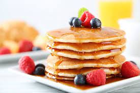

Los panqueques caseros son una excelente opción para preparar todo tipo de platos. Paso a paso, las instrucciones para disfrutar de una comida sencilla pero deliciosa.
Primero,reúne todos los ingredientes. Si no tienes harina leudante o preparada, que es harina de trigo que ya incluye levadura (también se llama harina de repostería), puedes usar harina de trigo normal y añadir una cucharadita de levadura química en polvo (polvo para hornear).
Coloca la harina en un bol y añade el huevo y la leche. Mezcla bien hasta que se integren estos ingredientes y no queden casi grumos.
Para terminar de hacer la masa de los panqueques caseros, agrega un chorrito de aceite y mezcla bien. Verás que el aceite hace que se terminen de disolver los grumos de harina y quede homogénea. (Truco: Si la masa está muy espesa puedes añadir un poco más de leche).
Para hacer los panqueques,calienta una sartén a fuego medio-bajo con un poquito de aceite o manteca. Cuando la sartén esté caliente , añade una cucharada de mezcla y déjala al fuego hasta que empiecen a salir burbujas en la superficie, entonces dale la vuelta y cocina por el otro lado.
Para servir la receta de panqueques es súper fáciles de hacer, añade un poquito de manteca y miel y a disfrutar. Si quieres comerlos algo salado, puedes servirlos con bacon y huevos fritos o un revuelto con jamón.
Los panqueques caseros son una excelente opción para preparar todo tipo de platos. Paso a paso, las instrucciones para disfrutar de una comida sencilla pero deliciosa.
